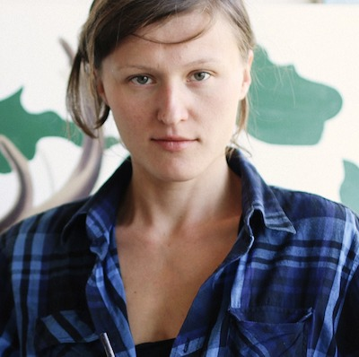

Олександр Гнилицький народився 1961 року в Харкові. Закінчив Харківське державне художнє училище і Національну академію образотворчого мистецтва та архітектури.З 1976 по 1980 рік навчався в Харківському художньому училищі (кафедра театральної декорації). З 1981 по 1987 рік навчався на Кафедрі монументального живопису Української державної академії мистецтва.
